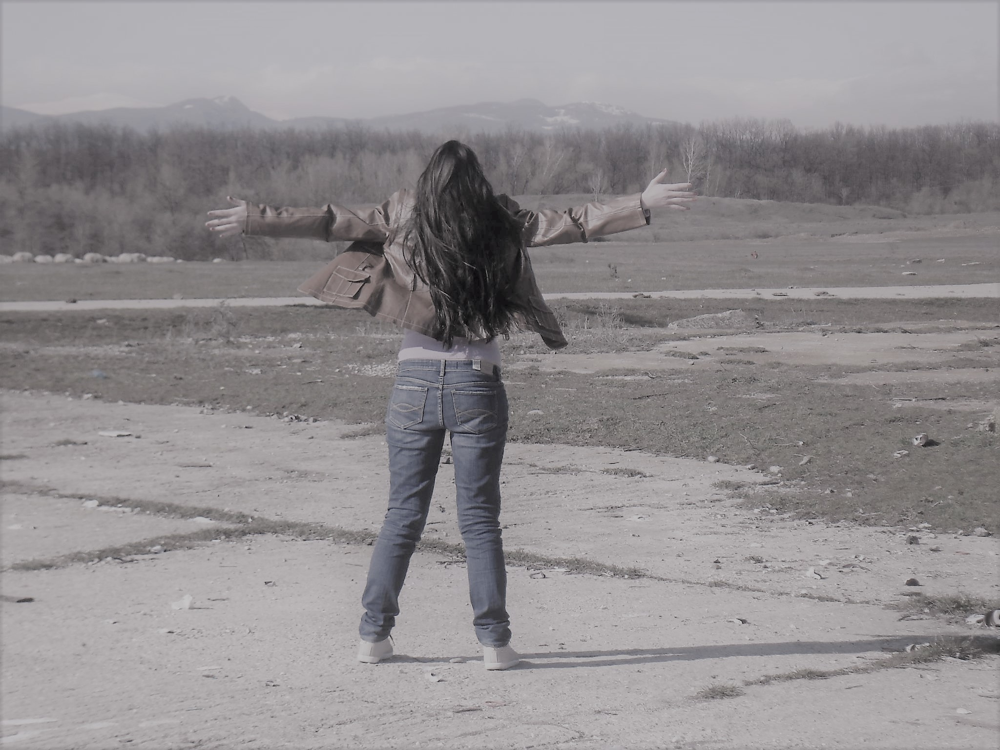

The Lie We Live
Words of wisdom, wonder, love.Thank you Steve Jobs! Thank F*ck You Never Loved Me At this moment you could be anywhere, doing anything. Instead you sit alone before a screen. So what’s stopping us from doing what we want? Being where we want to be?
Each day we wake up in the same room and follow the same path, to live the same day as yesterday. Yet at one time each day was a new adventure. Along the way something changed. Before our days were timeless, now our days are scheduled.
Is this what it means to be grown up? To be free? But are we really free?
Food, water, land.
The very elements we need to survive are owned by corporations. There’s no food for us on trees, no freshwater in streams, no land to build a home. If you try and take what the Earth provides you’ll be locked away. So we obey their rules.
We discover the world through a textbook. For years we sit and regurgitate what we’re told. Tested and graded like subjects in a lab. Raised not to make a difference in this world, raised to be no different. Smart enough to do our job but not to question why we do it. So we work and work, left with no time to live the life we work for. Until a day comes when we are too old to do our job. It is here we are left to die. Our children take our place in the game.
To us our path is unique, but together we are nothing more than fuel. The fuel that powers the elite. The elite who hide behind the logos of corporations. This is their world. And their most valuable resource is not in the ground. It is us.
We build their cities, we run their machines, we fight their wars. After all, money isn’t what drives them. It’s power. Money is simply the tool they use to control us. Worthless pieces of paper we depend on to feed us, move us, entertain us.
They gave us money and in return we gave them the world. Where there were trees that cleaned our air are now factories that poison it. Where there was water to drink, is toxic waste that stinks. Where animals ran free, are factory farms where they are born and slaughtered endlessly for our satisfaction. Over a billion people are starving, despite us having enough food for everybody. Where does it all go? 70% of the grain we grow is fed to fatten the animals you eat for dinner. Why help the starving? You can’t profit off them.
We are like a plague sweeping the earth, tearing apart the very environment that allows us to live. We see everything as something to be sold, as an object to be owned. But what happens when we have polluted the last river? Poisoned the last breath of air? Have no oil for the trucks that bring us our food? When will we realize money can’t be eaten, that it has no value?
We aren’t destroying the planet. We are destroying all life on it. Every year thousands of species go extinct. And time is running out before we’re next. If you live in America there’s a 41% chance you’ll get cancer. Heart disease will kill one out of three Americans. We take prescription drugs to deal with these problems, but medical care is the third leading cause of death behind cancer and heart disease. We’re told everything can be solved by throwing money at scientists so they can discover a pill to make our problems go away. But the drug companies and cancer societies rely on our suffering to make a profit. We think we’re running for a cure, but really we’re running away from the cause. Our body is a product of what we consume and the food we eat is designed purely for profit. We fill ourselves with toxic chemicals. The bodies of animals infested with drugs and diseases. But we don’t see this. The small group of corporations that own the media don’t want us to. Surrounding us with a fantasy we’re told is reality.
It’s funny to think humans once thought the earth was the center of the universe. But then again, now we see ourselves as the center of the planet. We point to our technology and say we’re the smartest. But do computers, cars, and factories really illustrate how intelligent we are? Or do they show how lazy we’ve become. We put this “civilized” mask on. But when you strip that away what are we?
How quickly we forget only within past hundred years did we allow women to vote; allow blacks to live as equals. We act as if we are all-knowing beings, yet there is much we fail to see. We walk down the street ignoring all the little things. The eyes who stare. The stories they share. Seeing everything as a background to ‘me’.
Perhaps we fear we’re not alone. That we are a part of a much bigger picture. But we fail to make the connection. We’re okay killing pigs, cows, chickens, strangers from foreign lands. But not our neighbours, not our dogs, our cats, those we have come to love and understand. We call other creatures stupid yet we point to them to justify our actions. But does killing simply because we can, because we always have, make it right? Or does it show how little we’ve learned. That we continue to act out of primal aggression rather than thought and compassion.
One day, this sensation we call life will leave us. Our bodies will rot, our valuables recollected. Yesterday’s actions all that remain. Death constantly surrounds us, still it seems so distant from our everyday reality. We live in a world on the verge of collapse. The wars of tomorrow will have no winners. For violence will never be the answer; it will destroy every possible solution.
If we all look at our innermost desire, we will see our dreams are not so different. We share a common goal. Happiness. We tear the world apart looking for joy, without ever looking within ourselves. Many of the happiest people are those who own the least. But are we really so happy with our iPhones, our big houses, our fancy cars?
We’ve become disconnected. Idolizing people we’ve never met. We witness the extraordinary on screens but ordinary everywhere else. We wait for someone to bring change without ever thinking of changing ourselves.
Presidential elections might as well be a coin toss. It’s two sides of the same coin. We choose which face we want and the illusion of choice, of change is created. But the world remains the same. We fail to realize the politicians don’t serve us; they serve those who fund them into power.
We need leaders, not politicians. But in this world of followers, we have forgotten to lead ourselves. Stop waiting for change and be the change you want to see. We didn’t get to this point by sitting on our asses. The human race survived not because we are fastest or the strongest, but because we worked together.
We have mastered the act of killing. Now let’s master the joy of living.
This isn’t about saving the planet. The planet will be here whether we are or not. Earth has been around for billions of years, each of us will be lucky to last eighty. We are a flash in time, but our impact is forever.
I often wished I lived in an age before computers, when we didn’t have screens to distract us.
But I realize there's one reason why this is the only time I want to be alive. Because here today, we have an opportunity we never had before. The internet gives us the power to share a message and unite millions around the world. While we still can we must use our screens to bring us together, rather than farther apart.
For better or worse, our generation will determine the future of life on this planet. We can either continue to serve this system of destruction until no memory of our existence remains. Or we can wake up. Realize we aren’t evolving upwards, but rather falling down...we just have screens in our faces so we don’t see where we’re heading.
This present moment is what every step, every breath and every death has led to. We are the faces of all who came before us. And now it is our turn. You can choose to carve your own path or follow the road countless others have already taken.
Life is not a movie. The script isn’t already written. We are the writers.
I am honored to be with you today at your commencement from one of the finest universities in the world. I never graduated from college. Truth be told, this is the closest I’ve ever gotten to a college graduation. Today I want to tell you three stories from my life. That’s it. No big deal. Just three stories.
The first story is about connecting the dots.
I dropped out of Reed College after the first 6 months, but then stayed around as a drop-in for another 18 months or so before I really quit. So why did I drop out?
It started before I was born. My biological mother was a young, unwed college graduate student, and she decided to put me up for adoption. She felt very strongly that I should be adopted by college graduates, so everything was all set for me to be adopted at birth by a lawyer and his wife. Except that when I popped out they decided at the last minute that they really wanted a girl. So my parents, who were on a waiting list, got a call in the middle of the night asking: “We have an unexpected baby boy; do you want him?” They said: “Of course.” My biological mother later found out that my mother had never graduated from college and that my father had never graduated from high school. She refused to sign the final adoption papers. She only relented a few months later when my parents promised that I would someday go to college.
And 17 years later I did go to college. But I naively chose a college that was almost as expensive as Stanford, and all of my working-class parents’ savings were being spent on my college tuition. After six months, I couldn’t see the value in it. I had no idea what I wanted to do with my life and no idea how college was going to help me figure it out. And here I was spending all of the money my parents had saved their entire life. So I decided to drop out and trust that it would all work out OK. It was pretty scary at the time, but looking back it was one of the best decisions I ever made. The minute I dropped out I could stop taking the required classes that didn’t interest me, and begin dropping in on the ones that looked interesting.
It wasn’t all romantic. I didn’t have a dorm room, so I slept on the floor in friends’ rooms, I returned Coke bottles for the 5¢ deposits to buy food with, and I would walk the 7 miles across town every Sunday night to get one good meal a week at the Hare Krishna temple. I loved it. And much of what I stumbled into by following my curiosity and intuition turned out to be priceless later on. Let me give you one example:
Reed College at that time offered perhaps the best calligraphy instruction in the country. Throughout the campus every poster, every label on every drawer, was beautifully hand calligraphed. Because I had dropped out and didn’t have to take the normal classes, I decided to take a calligraphy class to learn how to do this. I learned about serif and sans serif typefaces, about varying the amount of space between different letter combinations, about what makes great typography great. It was beautiful, historical, artistically subtle in a way that science can’t capture, and I found it fascinating.
None of this had even a hope of any practical application in my life. But 10 years later, when we were designing the first Macintosh computer, it all came back to me. And we designed it all into the Mac. It was the first computer with beautiful typography. If I had never dropped in on that single course in college, the Mac would have never had multiple typefaces or proportionally spaced fonts. And since Windows just copied the Mac, it’s likely that no personal computer would have them. If I had never dropped out, I would have never dropped in on this calligraphy class, and personal computers might not have the wonderful typography that they do. Of course it was impossible to connect the dots looking forward when I was in college. But it was very, very clear looking backward 10 years later.
Again, you can’t connect the dots looking forward; you can only connect them looking backward. So you have to trust that the dots will somehow connect in your future. You have to trust in something — your gut, destiny, life, karma, whatever. This approach has never let me down, and it has made all the difference in my life.
My second story is about love and loss.
I was lucky — I found what I loved to do early in life. Woz and I started Apple in my parents’ garage when I was 20. We worked hard, and in 10 years Apple had grown from just the two of us in a garage into a $2 billion company with over 4,000 employees. We had just released our finest creation — the Macintosh — a year earlier, and I had just turned 30. And then I got fired. How can you get fired from a company you started? Well, as Apple grew we hired someone who I thought was very talented to run the company with me, and for the first year or so things went well. But then our visions of the future began to diverge and eventually we had a falling out. When we did, our Board of Directors sided with him. So at 30 I was out. And very publicly out. What had been the focus of my entire adult life was gone, and it was devastating.
I really didn’t know what to do for a few months. I felt that I had let the previous generation of entrepreneurs down — that I had dropped the baton as it was being passed to me. I met with David Packard and Bob Noyce and tried to apologize for screwing up so badly. I was a very public failure, and I even thought about running away from the valley. But something slowly began to dawn on me — I still loved what I did. The turn of events at Apple had not changed that one bit. I had been rejected, but I was still in love. And so I decided to start over.
I didn’t see it then, but it turned out that getting fired from Apple was the best thing that could have ever happened to me. The heaviness of being successful was replaced by the lightness of being a beginner again, less sure about everything. It freed me to enter one of the most creative periods of my life.
During the next five years, I started a company named NeXT, another company named Pixar, and fell in love with an amazing woman who would become my wife. Pixar went on to create the world’s first computer animated feature film, Toy Story, and is now the most successful animation studio in the world. In a remarkable turn of events, Apple bought NeXT, I returned to Apple, and the technology we developed at NeXT is at the heart of Apple’s current renaissance. And Laurene and I have a wonderful family together.
I’m pretty sure none of this would have happened if I hadn’t been fired from Apple. It was awful tasting medicine, but I guess the patient needed it. Sometimes life hits you in the head with a brick. Don’t lose faith. I’m convinced that the only thing that kept me going was that I loved what I did. You’ve got to find what you love. And that is as true for your work as it is for your lovers. Your work is going to fill a large part of your life, and the only way to be truly satisfied is to do what you believe is great work. And the only way to do great work is to love what you do. If you haven’t found it yet, keep looking. Don’t settle. As with all matters of the heart, you’ll know when you find it. And, like any great relationship, it just gets better and better as the years roll on. So keep looking until you find it. Don’t settle.
My third story is about death.
When I was 17, I read a quote that went something like: “If you live each day as if it was your last, someday you’ll most certainly be right.” It made an impression on me, and since then, for the past 33 years, I have looked in the mirror every morning and asked myself: “If today were the last day of my life, would I want to do what I am about to do today?” And whenever the answer has been “No” for too many days in a row, I know I need to change something.
Remembering that I’ll be dead soon is the most important tool I’ve ever encountered to help me make the big choices in life. Because almost everything — all external expectations, all pride, all fear of embarrassment or failure — these things just fall away in the face of death, leaving only what is truly important. Remembering that you are going to die is the best way I know to avoid the trap of thinking you have something to lose. You are already naked. There is no reason not to follow your heart.
About a year ago I was diagnosed with cancer. I had a scan at 7:30 in the morning, and it clearly showed a tumor on my pancreas. I didn’t even know what a pancreas was. The doctors told me this was almost certainly a type of cancer that is incurable, and that I should expect to live no longer than three to six months. My doctor advised me to go home and get my affairs in order, which is doctor’s code for prepare to die. It means to try to tell your kids everything you thought you’d have the next 10 years to tell them in just a few months. It means to make sure everything is buttoned up so that it will be as easy as possible for your family. It means to say your goodbyes.
I lived with that diagnosis all day. Later that evening I had a biopsy, where they stuck an endoscope down my throat, through my stomach and into my intestines, put a needle into my pancreas and got a few cells from the tumor. I was sedated, but my wife, who was there, told me that when they viewed the cells under a microscope the doctors started crying because it turned out to be a very rare form of pancreatic cancer that is curable with surgery. I had the surgery and I’m fine now.
This was the closest I’ve been to facing death, and I hope it’s the closest I get for a few more decades. Having lived through it, I can now say this to you with a bit more certainty than when death was a useful but purely intellectual concept:
No one wants to die. Even people who want to go to heaven don’t want to die to get there. And yet death is the destination we all share. No one has ever escaped it. And that is as it should be, because Death is very likely the single best invention of Life. It is Life’s change agent. It clears out the old to make way for the new. Right now the new is you, but someday not too long from now, you will gradually become the old and be cleared away. Sorry to be so dramatic, but it is quite true.
Your time is limited, so don’t waste it living someone else’s life. Don’t be trapped by dogma — which is living with the results of other people’s thinking. Don’t let the noise of others’ opinions drown out your own inner voice. And most important, have the courage to follow your heart and intuition. They somehow already know what you truly want to become. Everything else is secondary.
When I was young, there was an amazing publication called The Whole Earth Catalog, which was one of the bibles of my generation. It was created by a fellow named Stewart Brand not far from here in Menlo Park, and he brought it to life with his poetic touch. This was in the late 1960s, before personal computers and desktop publishing, so it was all made with typewriters, scissors and Polaroid cameras. It was sort of like Google in paperback form, 35 years before Google came along: It was idealistic, and overflowing with neat tools and great notions.
Stewart and his team put out several issues of The Whole Earth Catalog, and then when it had run its course, they put out a final issue. It was the mid-1970s, and I was your age. On the back cover of their final issue was a photograph of an early morning country road, the kind you might find yourself hitchhiking on if you were so adventurous. Beneath it were the words: “Stay Hungry. Stay Foolish.” It was their farewell message as they signed off. Stay Hungry. Stay Foolish. And I have always wished that for myself. And now, as you graduate to begin anew, I wish that for you.
Stay Hungry. Stay Foolish.
Thank you all very much.
You deserve someone who would jump fences to be with you, not someone who is on the fence about being with you.

The best thing you could have done, was to never fall in love with me.
At one point, I wanted you to love me and I thought that your love would make sense of all the confusion that we sometimes couldn’t see our way out of.
It’s not that I begged for it, but I also just never gave up hope
Not necessarily because we were a perfect fit, but because I wanted it to be you.
And now I realize that I wanted it to be you, more than I actually needed you.
I liked the image and the picture that we could have painted.
We both know I am a bit of a romantic, even if my sarcasm and profanity hides it at times—and I liked our storyline.
It was one that felt comforting and known and so I thought that it was what I needed.
But, now I see that truly the best thing that you could have done for me was to simply not fall in love with me.
If you had offered it, I would have taken your hand in a minute.
I would have walked my talk, but I know now that maybe not tomorrow, next month or even next year—but at some point I would have wanted to fly away.
Because as wonderful as you are, I would have grown claustrophobic in the life we would have created.
That’s not to say that I don’t long for someone, because I do.
But, I also know that whether I’ll ever find it or not—I simply want it all.
I want the delicate balance of being with a man who can take control, but who also doesn’t mind when I wander off the edge of the page, in search of something that can’t yet be named.
I dream of sleeping next to a man who I know will have my back no matter what life throws at me, because I would always go to the ends of the Earth, just so he fell asleep with a smile on his face each evening.
And while I may be a bit of a reckless free spirit, I also can’t wait for the evening when I can cook a meal that fills a man’s heart as well as his belly.
I did love you in the way that only two people who have known each other forever could.
But, I realize now that I was never in love with you, although I didn’t want to acknowledge it then.
I will forever be thankful that you never decided to pursue things with me, because then I may miss out on someone who is better suited for me.
Someone who doesn’t mind getting woken up by a little blondie with crazy morning hair.
Someone who will never thinks that I am too much—simply because he can’t ever get enough.
Because I realize that wildness isn’t a behavior—but it’s a spirit characteristic.
And while I know the man who I invite into my life will have a heart of gold, he also will deviate from the norm, just as much as I do.
More than likely, he will even delight in not doing what everyone else does, just like me.
At one point, I clung to the idea of you because I was afraid of what life would bring me.
I didn’t want surprises, and I didn’t want the unknown and frankly I didn’t want the challenging—changing my life forever—kind of love.
So, as much as I never saw it—you were my place of forgetting that I ran to, when life frightened me or even let me down.
Because with you, I was and will always be a carefree teenager who has no desire to woman up and face whatever the hell the universe has in store for her.
The thing is, no matter how many times I ran away from life, I was never meant to run into your arms.
While that carefree girl was wonderful, I don’t want to be her anymore and I don’t want to deny or ignore the parts of myself or my life that continually call to me.
The one important thing that you did do though—is to show me that I am ready.
I’m ready to have my world rocked and turned upside down.
I’m ready to not run and to face whatever is brought to my doorstep—and my heart—each day.
I don’t need you, or anyone else to put off living the life that I am meant to, any longer.
So, I feel it down in my bones, that one of the deciding moments of my life was when you decided to not love me.
Because now I know that you left an open spot in my heart for someone to come in and f*ckin’ change my life in ways that I can’t even fully comprehend.
I’m ready to invision someone with me at the grocery store and making dinner at home.
I can picture someone spending days of adventures with my girls and me.
And I can picture telling a man that I have fallen in love with him.
Because in you choosing not to love me, I realized that I am ready for love.
I’m ready to give up every damn preconceived notion that I’ve used to keep me warm at night, for far too long.
I never would have expected that walking away from one another would have been the start of the greatest adventure of my life—but now I see that it is just that.
Because it really wasn’t an ending at all—it was just the beginning.
The start of the life that I had waiting for me all along.
Elephant Journal